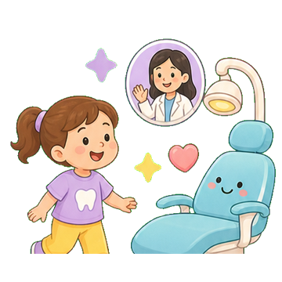
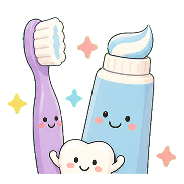
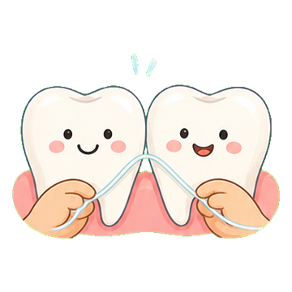
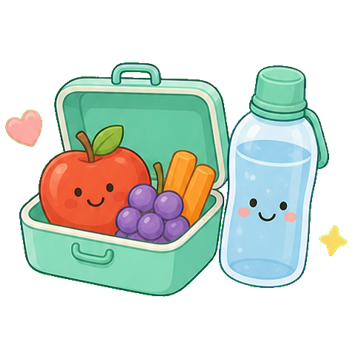
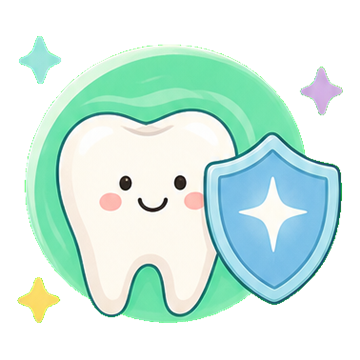
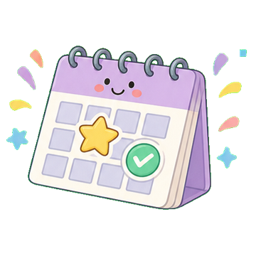

Antes del dolor es mejor
La visita temprana ayuda a crear confianza y detectar riesgos a tiempo.



Consejos para papás
Contenido breve para familias que quieren hacer las cosas bien sin sentirse abrumadas.
La visita temprana ayuda a crear confianza y detectar riesgos a tiempo.

Usa movimientos suaves y acompaña hasta que pueda hacerlo bien solo.

Si el cepillo no entra entre dientes, el hilo empieza a importar.

La frecuencia de azúcar pesa mucho en el riesgo de caries.

La caries puede verse tarde; por eso la prevención funciona mejor antes de que duela.

La cooperación crece con paciencia, juego y mensajes positivos.

Tips rápidos
Cepillado supervisado antes de dormir, agua como bebida principal, snacks menos pegajosos y controles preventivos según indicación profesional.
 Agendar
Agendar